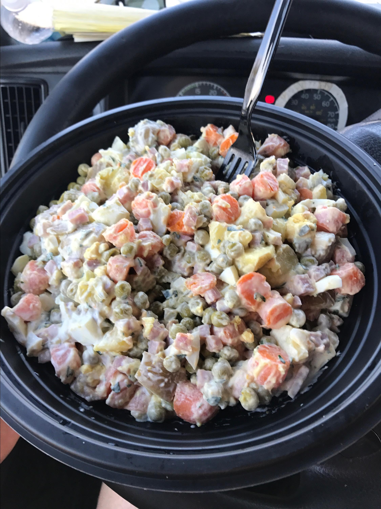

Russian Salad

Description
These are the necessary ingredients to make our delicious dish
- 6 potatoes, peeled
- 1 carrot, or more to taste
- 4 eggs
- 6 large pickles, cut into cubes
- 1 (15 ounce) can peas, drained
- ½ cup cubed fully cooked ham, or to taste
- 1 tablespoon chopped fresh parsley, or to taste (Optional)
- ½ cup mayonnaise, or to taste
And these are the steps to follow to make a lasagna
- Bring a large pot of water to a boil; add potatoes and carrot. Return mixture to a boil and add eggs; cook until potatoes are tender, 20 to 30 minutes. Drain and slightly cool mixture. Chop potatoes and carrot; peel and chop eggs
- Mix potatoes, carrot, eggs, pickles, peas, ham, and parsley together in a large bowl; stir in mayonnaise until salad is evenly coated.